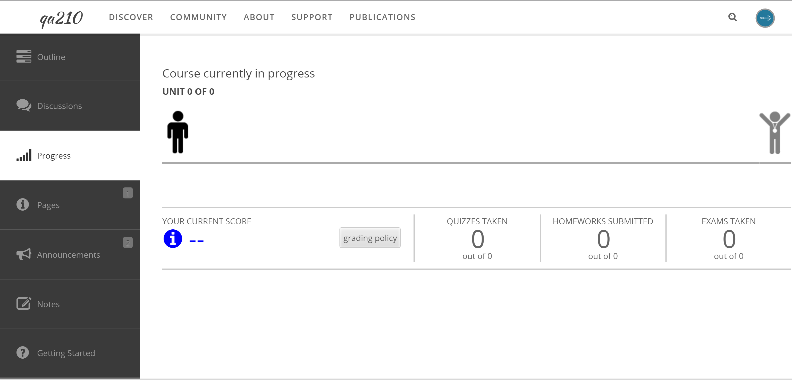

Hub users
Courses
A course is an online class run on the hub. It holds lectures, videos, wiki
pages, homework, quizzes and exams, tracks how far each student has got, and
can hand out a certificate or a badge at the end. Courses are at
/courses on the hub.
How a course is put together
Four levels sit inside each other. You meet all of them in the URL of a course page.
| Level | What it is |
|---|---|
| Course | The catalogue entry: title, short description, tags, a long description, instructors and any extra overview pages |
| Offering | One run of the course. A course that changes significantly gets a new offering rather than an edit |
| Section | One cohort inside an offering. Sections decide who may enrol, when material becomes available, and whether a certificate is offered |
| Unit | A week or module of an offering, holding asset groups — Lectures, Homework, Exam — and the assets in them |
Students enrol in a section. Most hubs run a single default section per offering, so enrolling looks like enrolling in the course itself.
The two views of a course
The course overview at /courses/{alias} is public. It shows the title,
the short description, the long description under an Overview tab, the
instructors, how long the course takes and how much effort it needs, an
Offerings tab, and any extra pages the instructor has added. A
Go to Course button takes you in.
Inside the course, tabs come from the courses plugins the hub has enabled: Getting Started, Outline, Progress, Announcements, Discussions, Notes, Pages, and, for instructors, Dashboard. The Outline tab is where the material is.
Finding a course
/courses has a search box and a Browse the catalog button. The catalog
at /courses/browse lists published courses with their instructors, filters
by tag, and sorts by Title, Alias or Popularity.
What to read next
- Student features — enrolling, working through the outline, tracking your progress, and claiming a certificate or badge.
- Course manager features — what an instructor can do from the course pages themselves.
- The Courses chapter in the Hub managers book covers everything an administrator does in the back end, including sections, coupon codes, certificates and roles.
Course manager features
What an instructor does from the course pages themselves, without going near the administrator interface. Everything on this page happens on the site.
What is on the site and what is not
The front end is where you write the course and build its material. The back end is where the hub's shape is set: sections, who may enrol, when material becomes available, certificates, badges, coupon codes and roles.
| Task | Where |
|---|---|
| Course title, short description, tags | Course overview page |
| Long description | Overview tab |
| Extra overview pages | Course overview page and the Pages tab |
| Instructors and managers | Course overview page |
| Creating an offering | Course overview page and the Offerings tab |
| Publishing a draft course | Course overview page |
| Building the outline: units, asset groups, assets | Outline tab |
| Quizzes and exams, and their deployment settings | Outline tab |
| Prerequisites | Outline tab |
| Gradebook and grading policy | Progress tab |
| Editing an offering's title, dates or state | Administrator only |
| Sections, enrolment setting, coupon codes | Administrator only |
| Availability dates for units and assets | Administrator only |
| Certificates and badges | Administrator only |
| Course roles | Administrator only |
The administrator side is covered in the Courses chapter of the Hub managers book.
Creating a course
If the hub lets you create courses, a Create Course button appears at
the top right of /courses and /courses/browse.
- Select Create Course.
- Fill in Alias — alphanumeric, and it becomes part of the course URL. The field checks as you type whether the alias is free.
- Fill in Title.
- Add a Short description. This is the text that appears in the course catalog.
- Add Categories (tags), separated by commas.
- Decide whether to tick Allow forks (derivatives) of this course?. When ticked, another hub user may copy your course as a starting point for their own, and their copy keeps a link back to yours.
- Select Save.
A new course is created in Draft state and you become its manager. Only course managers can see a draft course, so you can build it before anyone arrives. When it is ready, select Publish in the banner at the top of the course overview.
Editing the course overview page
Go to /courses/{alias}. Where you can change something, a small Edit
button appears next to a label saying what it changes.
Title & Short description — opens a form with Title, Short description, Categories (tags) and the Allow forks checkbox. Select Save.
Time & Effort — the panel on the right. Opens Course length and
Estimated Effort, both free text (4 weeks, 5 - 8 hours per week).
Whatever you type appears in the summary table beside the enrolment button.
Long description — on the Overview tab. Opens the rich-text editor on the course's long description.
Page contents — on each extra page tab you have added. Gives you Edit and Delete for that page.
Logo — drop an image onto the panel on the right, or use the file field beneath it. It appears beside the course title.
Adding an overview page
An overview page is an extra tab on the course overview.
- Select the Add page tab at the end of the tab strip.
- Fill in Title, and an Alias if you want to control the URL. Leave the alias empty and it is made from the title.
- Write the page in the editor.
- Select Save.
Instructors and managers
The Manage button beside Instructors/Managers in the right-hand column opens a pop-up.
- In Enter comma-separated usernames or IDs, type the people to add. The field takes several at once.
- Pick a role from Select role. Roles that belong to a single offering are grouped under that offering's name.
- Select Add. Changes saved appears and the person is listed below.
- To change somebody's role, pick a different one from the drop-down beside their name. It saves as soon as you change it.
- To remove somebody, tick the box beside their name and select Remove.
Creating an offering
An offering is one run of the course. Create a new offering when the material changes significantly, rather than editing the old one.
- On a course with no offerings, a panel says This course needs an offering! with a Create an offering button.
- On a course that has one, use the New button on the Offerings tab.
Either way the form asks for an Alias and a Title; only the title is required. Select Save.
The Offerings tab lists each offering with the number Enrolled and its Enrollment status — Accepting, Restricted or Closed — and a button reading Access Course or Enroll in Course.
Copying and forking
Copy appears at the top right for a manager of the course, and makes a duplicate you own. Fork appears instead for anyone else when the course has Allow forks turned on, and makes a copy that keeps an attribution back to the original. Both ask you for a new alias.
Building the outline
- Select Go to Course on the course overview to enter the offering.
- Open the Outline tab and select Edit outline.
The builder is a single page that saves as you go. Done at the top right returns to the outline; Deleted Assets opens the tray of removed items.
Units
Select Add a new unit at the bottom of the list. To rename one, select edit beside its title, change Title:, and select Save.
Each new unit comes with the hub's default asset groups, which an administrator sets under the component's Default Asset Groups option — normally Lectures, Homework and Exam.
Asset groups
Select edit on an asset group's title to open its form:
| Field | Notes |
|---|---|
| Title: | What the group is called |
| Published: | Yes or No |
| Short Description: | One or two sentences |
Inside each group, Add a new lecture (or homework, or exam — the label is the group's title in the singular) creates a place to put material.
Adding material
Each place you have added carries a drop zone reading Drag files here to upload, and beneath it a row of buttons:
| Button | What it does |
|---|---|
| Attach a link | Paste one or more URLs into the box and select Add |
| Embed a Kaltura or YouTube Video | Paste the video's embed code |
| Include a wiki page | Write a wiki page in place, with references |
| Include a tool | Attach one of your hub tools. Only appears when the hub has a tool directory configured |
| Browse for files | Pick files from your computer |
All of them take several items at once. Once a file lands, the hub works out what kind of asset it is from the extension. Where more than one kind is possible you are asked What do you want to do with these files? and given the choice — a PDF, for example, can become Post notes or slides (i.e. a downloadable file) or Create a quiz/exam.
Each asset in the list carries icons for preview, edit and delete, and a checkbox reading Mark as reviewed and publish?. Tick it and the label changes to Published. Selecting the asset's title lets you rename it in place.
The Edit Asset dialog
The edit icon opens a dialog with:
| Field | Notes |
|---|---|
| Title: | |
| URL: | Hidden for quizzes and exams |
| Type: | Video, File, Form, Text, URL |
| Subtype: | Video, Embedded, File, Exam, Quiz, Homework, Note, Wiki, Link, Tool |
| Attach to: | Move the asset to a different asset group |
| Create a gradebook entry for this item? | Makes it gradable |
| Include this item in the progress calculation? | Counts it towards the student's progress bar |
| Launch a tool with this file? | Only when the hub has tools and the asset is a file or a tool URL |
| Prerequisites: | See below |
Select Submit to save, Cancel to close.
Quizzes and exams
Only a PDF can become a quiz or exam the hub marks for itself. Any asset can be given a gradebook column with Create a gradebook entry for this item? in the Edit Asset dialog, but you enter those scores by hand from the Progress tab.
- Drop the PDF onto an asset group.
- Answer What do you want to do with these files? with Create a quiz/exam.
- Fill in Title:.
- For each question, drag a box around the question and all of its answers. A pale yellow marker appears around it.
- Click beside each possible answer to drop a radio button there.
- Select the radio button next to the correct answer.
- Repeat for every question, then select Save and Close.
Deployment settings
Tick the publish checkbox on the finished quiz and the deployment form opens.
Times
- Time limit: in minutes. A timed form shows the student a landing page first, so the countdown does not start before they are ready.
- Attempts: how many tries are allowed. The default is 1.
Results
Two sets of radio buttons, one for While the form is open, show users: and one for After the form is closed, show users:. Both offer:
- only confirmation that their submission was accepted
- their score
- a complete comparison of their answers to the correct answers
Select Create deployment.
You can reopen the deployment later with the edit deployment icon beside the asset, and the question layout with the edit layout icon.
Prerequisites
A prerequisite must be completed before the item that requires it can be opened. Units require units; assets require assets.
On a unit: in the outline builder, select edit beside the unit title. Under Prerequisites:, pick a unit from the add prerequisite… drop-down.
On an asset: open the asset's Edit Asset dialog and use the Prerequisites: section the same way.
Either way the prerequisite is saved as soon as you pick it, and appears in a list above the drop-down with an x to take it off again. You can set more than one. Only published assets are offered as asset prerequisites.
Restoring deleted material
Deleting an asset in the builder moves it to a tray rather than destroying it.
- In the outline builder, select Deleted Assets at the top.
- Find the item and select Restore.
The button is hidden when the tray is empty.
The gradebook
The Progress tab shows students their own progress. For an instructor it shows the whole class, with three views selected from the buttons at the top left: progress view, gradebook view and reports view. Alongside them:
| Button | What it does |
|---|---|
| edit grade policy | Set how the course grade is worked out. Hidden when the hub has turned off Can section owners edit grading policy? and you are not a course manager |
| add a new entry | Add a gradebook column by hand. Course managers only |
| export to csv | Download the gradebook |
| refresh gradebook view | Reload the grid |
| download selected detailed results | Download the individual responses to a form |
A Search students box and a pager sit below.
Putting an image in a page
The Pages tab inside a course offering — not the overview pages on the course — has a file uploader beside the editor, so an image can be uploaded and then referenced from the page body.
- Open the Pages tab and select Add page, or the Edit icon on an existing page.
- Drop an image onto the Click or drop file area on the right.
- Copy the URL that appears under the uploaded file.
- Put the cursor where the image should go, then use your editor's image button and paste the URL into its URL field. In CKEditor that is the Image button and the Image Info tab; other editors differ, because the hub chooses which editor to load.
- Select Save.
The page form also has Page appears for section:, which restricts the page to one section of the offering, or - All sections -.
Student features
Finding a course, enrolling in it, working through it, and seeing how far you have got.
Finding a course
- Go to
https://yourhub.org/courses. - Search from the box on that page, or select Browse the catalog for the full list.
- The catalog sorts by Title, Alias or Popularity, and narrows to one tag at a time. Each entry shows the course number, its short description and its instructors.
- Select a course title to open its overview.
Enrolling
The course overview is public. The long description, the instructors, the course length and the estimated effort are all readable before you enrol. Everything under Go to Course — the outline, discussions, your progress — needs enrolment.
To enrol, select Go to Course on the course overview. What happens next depends on how the section is set up:
| Setting | What you see |
|---|---|
| Open | You are enrolled straight away. Congratulations! You are now enrolled in the course. |
| Restricted | A Redeem coupon code form. Type the code you were given and select Redeem |
| Closed | Course enrollment is closed. with links to the support form and the course catalog |
A course may also be sold through the hub's store. When an offering has a price, Go to Course takes you to the cart instead of enrolling you.
Where a course runs more than one offering, or you belong to more than one section, the button opens a list so you can pick which one to enter.
Looking before you enrol
An instructor can turn on a preview, so the outline can be read without enrolling. There are two kinds: a full preview, and a preview of the first unit only. While previewing, a banner reads You're currently viewing this course in preview mode. Some features may be disabled.
Quizzes and exams can never be previewed. Opening one without being enrolled gives You must be enrolled to utilize this asset.
Inside the course
Tabs run across the top. Which ones appear depends on the plugins the hub has enabled:
| Tab | What it holds |
|---|---|
| Getting Started | How the course works |
| Outline | The units, lectures, files, videos, wiki pages, homework, quizzes and exams. This is where most of the work happens |
| Progress | Your own progress and grades |
| Announcements | Notices from the instructor |
| Discussions | Threads for the course. Depending on the section, you see threads from your own section only or from all of them; sticky threads always show everywhere |
| Notes | Your own notes, taken against the material |
| Pages | Syllabus, errata, and anything else the instructor has written |
Material becomes available on the dates set for your section, and an item with a prerequisite stays shut until you have finished the item it requires.
Tracking your progress
Open the Progress tab.
The timeline runs across the top: a walking figure moves along a bar divided into one segment per unit, from a start marker to a finish marker. A segment fills in as you work through that unit's material. The heading above says whether the course has started, is in progress, or has ended, and the line beneath says which unit you are on — Unit 3 of 8.
Three tiles sit below it:
| Tile | What it counts |
|---|---|
| Your current score | Your grade as a percentage, marked passing or failing |
| Quizzes taken | Out of the total number in the course |
| Homeworks submitted | Out of the total number in the course |
| Exams taken | Out of the total number in the course |
A grading policy link beside the score explains how it is worked out, and the policy's own description is printed under the tiles. The grading policy is set per section, by the course's instructors rather than by the hub administrators.
The breakdown below lists every unit with its percentage. Open a unit and you get a table of Assignment, Score and Date taken for each graded item in it.

Certificates
A course can hand out a certificate: a PDF carrying your name, login, email address, the course, the offering, the section and the date.
Three things all have to be true before you can claim one. The course has a certificate, your section offers it, and you are eligible: you have taken every graded exam, quiz and homework that the grading policy gives a weight to, and your score is a pass. When they are, a panel appears at the top of your Progress tab with a Download your certificate! link. The PDF is generated the first time you ask for it and downloaded as an attachment.
Where the course has a certificate that some section offers, the course overview's summary table says Certificate: Available before you enrol.
Badges
A section can also offer a badge, issued through the hub's badge provider. It uses the same eligibility test as the certificate. When you qualify, a panel appears on your Progress tab:
- Congratulations! You've earned the badge...and you deserve it! with a Claim your badge! link — or, where the provider gives no claim URL, a note to watch your email.
- After claiming: Congratulations! You've got the badge! with View your badges!
- If you turned it down: Congratulations! You earned the badge! with View denied badges, and you can go back and claim it later.
Rewritten and checked against 2.4-main @ 1924c22171 on 2026-09-09.